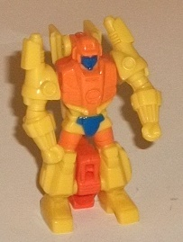
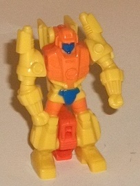
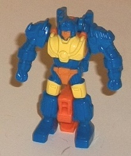
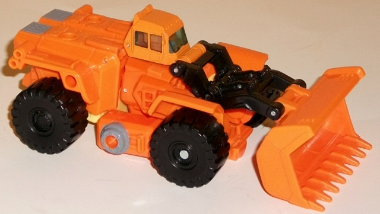
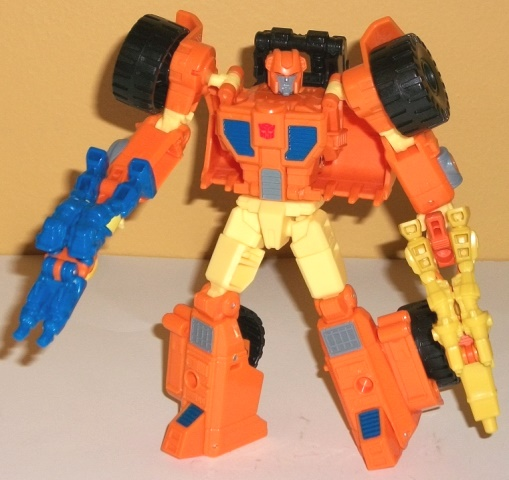

Difficulty of Transformation : Very Easy
Color Scheme : Yellow, light orange, and some dark blue
Individual Rating : 5.6
Allegiances
: Autobot
Size
: Deluxe w/ 2 Targetmasters
pack
 Caliburst
Caliburst

Difficulty of Transformation
: Very
Easy
Color Scheme
: Yellow, light orange,
and some dark blue
Individual Rating
: 5.6
Caliburst is a little
teeny tiny "Targetmaster" partner for Scoop, meaning that he turns into
a gun. As opposed to most of my reviews, I'll start with the robot mode
first, as so many of my comments on the gun mode depend on some robot mode
comments. Caliburst's robot mode proportions are pretty well done, and
I love that the mold detailing-- which is quite well-done, particularly
with the intricate bits on his arms and chest-- makes it vague whether
this is a little robot or a "Nebulan in an exo-suit", so you can change
what exactly Caliburst is depending upon what continuity you want to go
with. He does have some kibble issues; one of them fairly minor, the other
fairly major. The minor one is that Caliburst's gun nozzle sits behind
his back rather obviously-- however, it does "tuck back there" pretty good
for the tiny size of this toy, and doesn't get in the way of articulation.
The major one is that there's a bit chunk of orange in between his two
legs, which just looks unsightly and out-of-place; there's no away around
that. As for his color scheme, Caliburst's primarily yellow, and if you've
been reading my reviews for a while you probably know I'm not the biggest
fan of yellow in most cases. Caliburst is no exception here, but I do like
how well the orange paint on his body and upper legs complements the yellow,
and the blue paint on his crotch and face serves as a nice dark contrast
color. (A dark blue face does look a little odd, though.) For articulation,
Caliburst can move at the shoulders on ball joints; that's it, though honestly
at this tiny size you can't ask for too much more when you're also getting
a deluxe and another Targetmaster in the pack.
Caliburst's gun mode
(see below) is the weaker of his two modes, but it still looks like a gun
to a reasonable extent; the feet on the back end are quite obvious, as
are the arms on the top (other than rotating the arms back, you flip the
gunbarrel over Caliburst's head and rotate around his peg piece in between
his legs down). The single-barrel gun nozzle is quite well-proportioned,
and as a silouhette it fits the profile of a blaster quite well; it's just
some of the mold details don't match up. You can fold Caliburst's arms
down to unveil a little peg by which his buddy Holepunch can slide in on
top to form a "double Targetmaster", a pretty neat addition though if makes
Caliburst on the bottom look a little more awkward with his arms at the
gun's sides, and I wish the connection were a bit more stable as the peg
hole's a tad shallow. By far the biggest issue with this mode is that the
peg that other TFs hold him by is only connected to the legs by small,
shallow little indentations, so it can come undone VERY easily, especially
when pushing him in/out of a larger TF's fist hole. That piece really should've
been pinned in there to prevent this annoying issue.
 Holepunch
Holepunch

Difficulty of Transformation
: Very
Easy
Color Scheme
: Dark blue, light orange,
and yellow
Individual Rating
: 5.9
Holepunch-- in terms
of his design-- is absolutely identical to Caliburst, so all of the general
flaws and features of the design that I outlined in Caliburst's review
apply completely to Holepunch (including the ability for Holepunch to become
the "bottom" gun of a double Targetmaster gun if you were to attach Caliburst
on top of him in weapon mode). Holepunch's colors are the main difference
here-- though he's technically got the same color scheme as Caliburst,
the dark blue is much more prevalent here, and I think works better as
a main color than Caliburst's yellow. There is a bit of yellow and orange
paint (along with the orange piece in between his legs), and both contrast
with the blue quite well. Particularly when they're used as accent colors
on the chest, face, and upper legs, this color scheme works quite a fair
bit better for me. When it comes to the mold detailing, Holepunch is a
bit more curved and organic-looking than Caliburst, with smaller shoulders
and detailing on his main body that look more like an exosuit than Caliburst's
detailing. That said, the mold detailing on the face is still vague enough
where you can pass Holepunch off as either a Nebulan in armor or a little
robot. In gun mode, Holepunch also forms a double-barreled gun, compared
to Caliburst's one barrel.
 Autobot
Scoop
Autobot
Scoop


Difficulty of Transformation
: Easy
Color Scheme
: Light orange, black,
and some pale light yellow, dark blue, moderately dark gray, and transparent
pale light blue
Individual Rating
: 9.2
Scoop! Now THERE'S a
G1 toy I never thought would get a new-mold update for the Generations
line. This relatively obscure G1 Double Targetmaster has kept his original
alt mode of a bulldozer, and the proportions look pretty darned good. The
back end of the bulldozer is just a TAD too large with the cockpit being
just a touch too small, but that's about it as far as proportional maladies
go. There are a few kibble issues as well, though in most positions/angles
they're fairly minor. For one, Scoop doesn't have much of a back end in
this mode, it just being his legs folded up with no real rear bumper. There's
also a rather significant gap underneath the black plastic pieces that
form part of his shovel arm; luckily, unless the shovel arm is raised quite
high this doesn't become obvious. (The shovel arm can move up-and-down
at three places, FYI.) The color scheme of Scoop in this mode is quite
basic in this mode, being almost entirely orange and black with a little
bit of dark gray as an accent color. There's a pale light blue used for
the transparent plastic for the windows-- it's JUST light enough where
you can see the robot head right inside the cockpit. I wish they had simply
painted up this portion to hide the robot head a bit better. The orange
and black contrast against each other very well, and the gray looks okay,
but this mode really needed more color variation and paint apps, as there's
a bit too much unpainted orange. The mold detailing is quite intricate
when it's needed, with things like ladders, vents, and "rivets" molded
into the toy but completely unpainted. Scoop has several 5mm ports for
weapons in this mode, including two on the top of the back end, one on
each side above the rear wheels, and one on each side on the section in
between both wheels. Thus, he has plenty of places to put his Targetmasters.
Scoop's transformation
is fairly simple but also rather intuitive in how his chest folds apart
and up, with the end result being a very well-proportioned robot mode.
Really, I have no qualms at all about his proportions in this mode; they're
perfect. The only real caveat here is that Scoop's... well... scoop is
sticking out quite obviously from behind his upper back, and this can get
in the way of shoulder movement a bit, but that's about the only blatant
extras; the wheels on the lower legs and shoulders look quite neat at their
positions. Scoop's lower arms are hollow because of the hands that flip
out-- I wish a little flip-out panel had been added to his forearms to
help negate this minor eyesore. Scoop's mold detailing in this mode is
a bit simple, but this is largely in keeping with his G1 toy-- his headsculpt
is excellently done, and the light blue light piping for his eyes works
fairly well. The color scheme is greatly improved in this mode, with the
largest difference being the addition of a fair amount of pale yellow,
which complements the orange quite well. There's also some more dark gray
and some dark blue paint apps scattered throughout his body-- the blue
and gray "vent" detailing on the chest looks good, in particular, so he's
much more visually interesting in this mode. For articulation, Scoop can
move at the neck, shoulders (at two points, though at one of them the shoulders
can get "unhooked" from the body and rotate around a bit too easily, which
is a minor annoyance. He can also move at the elbows (at two points), inwards
at the wrists, and at the hips (at two points), knees (at two points),
and waist rotation. Really, he's got just about all the articulation you
could reasonably expect form a deluxe, besides perhaps a bit more ankle
articulation. (Given that the scoop on his back makes him slightly back-heavy,
he could stand to be a tad more stable, but just a tad-- it's still not
difficult to get him to stand up by himself).
Generations Scoop w/ Caliburst & Holepunch is a great deluxe-priced 3-pack. Caliburst and Holepunch look surprisingly decent in both modes for Targetmasters, though their handles coming unattached easily is pretty annoying. Scoop himself is an excellent toy in both modes, with only some minor issues, like a lack of paint apps in bulldozer mode and a few minor kibble issues. His proportions and articulation in robot mode are particularly well-done, given that he comes with two little guys and thus his parts count has been reduced a bit as a result. Overall, if you at all like Targetmasters or simply want a construction vehicle Autobot for a change, Generatops Scoop I'd give a solid recommendation.
Reviews by Beastbot